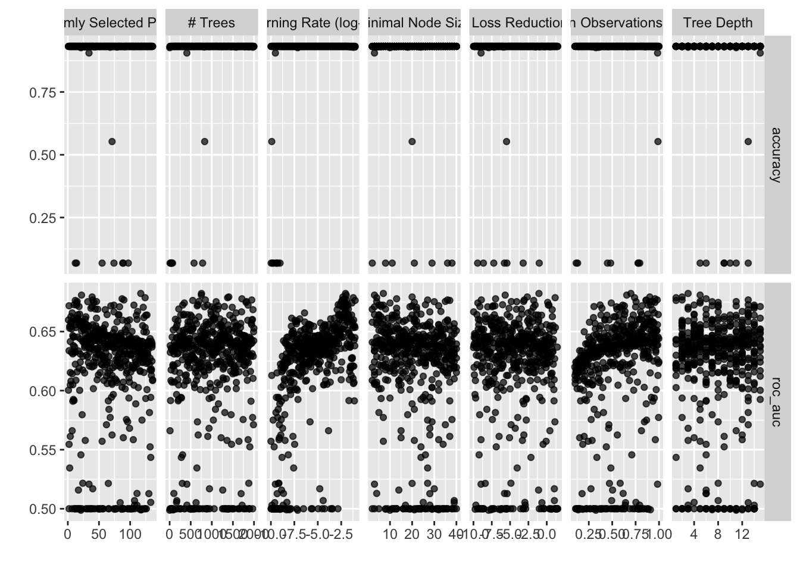
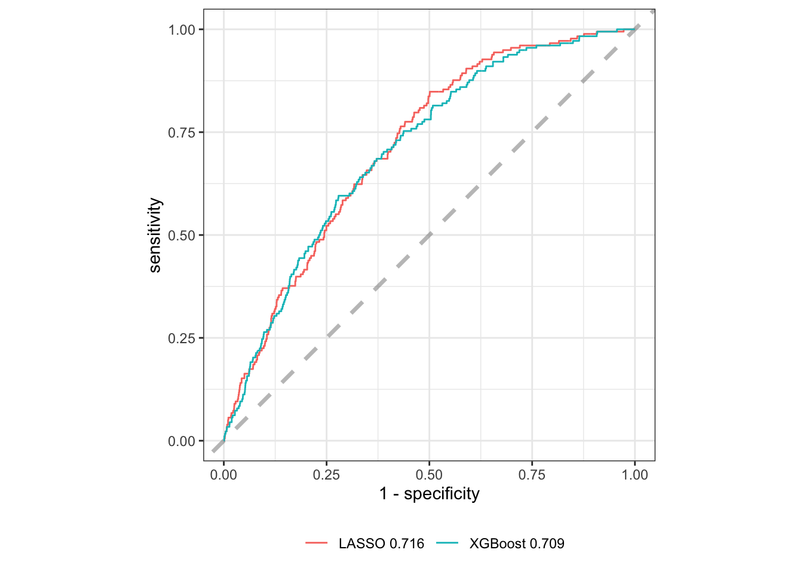
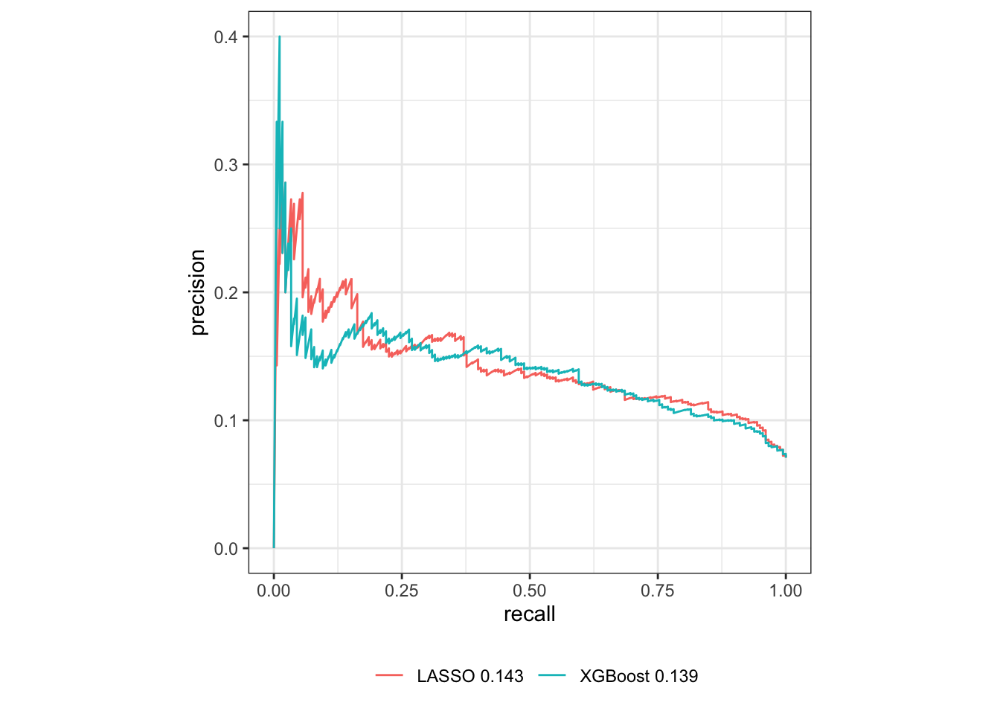

Code
- 1
- Set a seed, for constant results
- 2
- Make the split object for training / testing
- 3
- Create the train / test data
- 4
- Create a cross validation train set
This study uses a well known database of 10058 men recruited in 1963 and were followed up for 5 years to investigate ischemic heart disease incidence (Medalie et al. 1973). The goal is to predict longevity using mid-life predictors.
This data frame contains 135 variables:
Demographics data (32)
Medical data including medical history, laboratory tests and measurements (42)
Daily physical activity assessment (4)
Work related data (e.g. satisfaction, income etc.) (23)
Family relations (10)
Diet habits (23)
Outcome - reaching to the age of 95, prevalence of 6.9 %
prepare our data for ML analysis
create specifications for the different models
hyper-tune parameters
examine results
lasso_rec <- recipe(outcome ~ ., data = df_train) %>%
update_role(id_nivdaki, new_role = "ID") %>%
step_impute_knn(all_predictors(), neighbors = 3) %>%
step_poly(all_numeric_predictors(),degree = 3) %>%
step_date(all_date_predictors(), keep_original_cols = FALSE, features = "month")%>%
step_other(all_nominal_predictors(), threshold = thresh_other, other = "other_combined") %>%
step_dummy(all_nominal_predictors()) %>%
step_zv(all_numeric_predictors()) %>%
step_corr(all_numeric_predictors(), threshold = thresh_corr, method = "spearman") %>%
step_normalize(all_numeric_predictors())
lasso_spec <- logistic_reg(penalty = tune(), mixture = 1) %>%
set_engine("glmnet") %>%
set_mode('classification')
lasso_wf <- workflow() %>%
add_recipe(lasso_rec) %>%
add_model(lasso_spec)
lasso_prep <- lasso_rec %>% # for later use in SHAP
prep(strings_as_factors = FALSE,
log_changes = TRUE,
verbose = TRUE)── Recipe ──────────────────────────────────────────────────────────────────────── Inputs Number of variables by roleoutcome: 1
predictor: 134
ID: 1── Training information Training data contained 7543 data points and 4444 incomplete rows.── Operations • K-nearest neighbor imputation for: dmg_admission_age, ... | Trained• Orthogonal polynomials on: dmg_admission_age, ... | Trained• Date features from: <none> | Trained• Collapsing factor levels for: dmg_martial_status, ... | Trained• Dummy variables from: dmg_ethnic and dmg_martial_status, ... | Trained• Zero variance filter removed: <none> | Trained• Correlation filter on: dmg_wife_work_outside_Housewife.or.No.Wife,
physical_activity_work_65_Physical.Work, lab_range_hdl_poly_1,
lab_glucose_poly_1, diet_gms_tot_fat_wk_poly_1, diet_tot_cho_poly_1,
diet_cho_strach_poly_1, diet_calories_rice_wk_poly_1,
diet_calories_cereal_wk_poly_1, dmg_ethnic_Israel | Trained• Centering and scaling for: dmg_admission_age_poly_1, ... | Trainedset.seed(2020)
lambda_grid <- grid_regular(penalty(), levels = 1000)
all_cores <- parallel::detectCores(logical = TRUE)
cl <- makeCluster(all_cores-2)
registerDoParallel(cl)
lasso_res <- tune_grid(
lasso_wf,
resamples = df_train_cv,
grid = lambda_grid,
control = ctl_grid
)
stopCluster(cl)lasso_res %>%
autoplot()lasso_res %>%
show_best("roc_auc")# A tibble: 5 × 7
penalty .metric .estimator mean n std_err .config
<dbl> <chr> <chr> <dbl> <int> <dbl> <chr>
1 0.00361 roc_auc binary 0.695 10 0.0139 Preprocessor1_Model0756
2 0.00353 roc_auc binary 0.695 10 0.0138 Preprocessor1_Model0755
3 0.00345 roc_auc binary 0.695 10 0.0139 Preprocessor1_Model0754
4 0.00396 roc_auc binary 0.695 10 0.0138 Preprocessor1_Model0760
5 0.00369 roc_auc binary 0.695 10 0.0138 Preprocessor1_Model0757lasso_best_auc <- lasso_res %>%
select_best("roc_auc")
final_lasso <- finalize_workflow(
lasso_wf,
lasso_best_auc
)
final_lasso_fit <- final_lasso %>%
last_fit(df_split)
collect_metrics(final_lasso_fit)# A tibble: 2 × 4
.metric .estimator .estimate .config
<chr> <chr> <dbl> <chr>
1 accuracy binary 0.929 Preprocessor1_Model1
2 roc_auc binary 0.716 Preprocessor1_Model1xgb_rec <- recipe(outcome ~ ., data = df_train) %>%
update_role(id_nivdaki, new_role = "ID") %>%
step_date(all_date_predictors(), keep_original_cols = FALSE, features = "month") %>%
step_integer(all_ordered_predictors()) %>%
step_other(all_nominal_predictors(), threshold = thresh_other, other = "other_combined") %>%
step_dummy(all_nominal_predictors()) %>%
step_zv(all_numeric_predictors()) %>%
step_corr(all_numeric_predictors(), threshold = thresh_corr, method = "spearman")
xgb_spec <- boost_tree(
trees = tune(),
tree_depth = tune(), min_n = tune(),
loss_reduction = tune(),
sample_size = tune(), mtry = tune(),
learn_rate = tune()
) %>%
set_engine("xgboost") %>%
set_mode("classification")
xgb_wf <- workflow() %>%
add_recipe(xgb_rec) %>%
add_model(xgb_spec)
xgb_prep <- xgb_rec %>%
prep(strings_as_factors = FALSE,
log_changes = TRUE,
verbose = TRUE)
xgb_bake <- bake(xgb_prep, df_train)── Recipe ──────────────────────────────────────────────────────────────────────── Inputs Number of variables by roleoutcome: 1
predictor: 134
ID: 1── Training information Training data contained 7543 data points and 4444 incomplete rows.── Operations • Date features from: <none> | Trained• Integer encoding for: dmg_education and dmg_wife_education, ... | Trained• Collapsing factor levels for: dmg_martial_status, ... | Trained• Dummy variables from: dmg_ethnic and dmg_martial_status, ... | Trained• Zero variance filter removed: <none> | Trained• Correlation filter on: lab_mean_nonhdl and diet_gms_tot_fat_wk, ... | Trainedset.seed(2020)
xgb_grid <- grid_latin_hypercube(
trees(),
tree_depth(),
min_n(),
loss_reduction(),
sample_size = sample_prop(),
finalize(mtry(), df_train),
learn_rate(),
size = 500
)
all_cores <- parallel::detectCores(logical = TRUE)
cl <- makeCluster(all_cores-2)
registerDoParallel(cl)
xgb_res <- tune_grid(
xgb_wf,
resamples = df_train_cv,
grid = xgb_grid,
control = ctl_grid
)
stopCluster(cl)xgb_res %>%
autoplot()
xgb_res %>%
show_best("roc_auc")# A tibble: 5 × 13
mtry trees min_n tree_depth learn_rate loss_reduction sample_size .metric
<int> <int> <int> <int> <dbl> <dbl> <dbl> <chr>
1 117 755 7 3 0.00910 0.0862 0.699 roc_auc
2 22 752 3 5 0.0108 0.00000213 0.655 roc_auc
3 39 1403 20 2 0.00474 0.00221 0.901 roc_auc
4 124 1374 4 1 0.0610 13.9 0.739 roc_auc
5 87 1714 13 6 0.00683 0.000000104 0.957 roc_auc
# ℹ 5 more variables: .estimator <chr>, mean <dbl>, n <int>, std_err <dbl>,
# .config <chr>xgb_best_auc <- xgb_res %>%
select_best("roc_auc")
final_xgb <- finalize_workflow(
xgb_wf,
xgb_best_auc
)
final_xgb_fit <- final_xgb %>%
last_fit(df_split)
collect_metrics(final_xgb_fit)# A tibble: 2 × 4
.metric .estimator .estimate .config
<chr> <chr> <dbl> <chr>
1 accuracy binary 0.929 Preprocessor1_Model1
2 roc_auc binary 0.709 Preprocessor1_Model1Figure 1 presents the ROC curves of the models
lasso_roc <- final_lasso_fit %>%
collect_predictions() %>%
roc_curve(outcome, .pred_centenarian) %>%
mutate(model = paste("LASSO", round(collect_metrics(final_lasso_fit)[2,3],3)))
xgb_roc <- final_xgb_fit %>%
collect_predictions() %>%
roc_curve(outcome, .pred_centenarian) %>%
mutate(model = paste("XGBoost", round(collect_metrics(final_xgb_fit)[2,3],3)))
lasso_pr <- final_lasso_fit %>%
collect_predictions() %>%
pr_curve(outcome, .pred_centenarian) %>%
mutate(model = paste("LASSO", round(pr_auc(data = final_lasso_fit %>%
collect_predictions(),
truth = outcome,
.pred_centenarian)[1,3],3)))
xgb_pr <- final_xgb_fit %>%
collect_predictions() %>%
pr_curve(outcome, .pred_centenarian) %>%
mutate(model = paste("XGBoost", round(pr_auc(data = final_xgb_fit %>%
collect_predictions(),
truth = outcome,
.pred_centenarian)[1,3],3)))
rbind(lasso_roc, xgb_roc) %>% #
ggplot(aes(x = 1 - specificity, y = sensitivity, color = model)) +
geom_abline(
lty = 2, alpha = 0.5,
color = "gray50",
linewidth = 1.2
) +
geom_path() +
coord_equal() +
theme_bw() +
theme(legend.position = "bottom",
legend.title = element_blank())
rbind(lasso_pr, xgb_pr) %>% #
filter(!is.infinite(.threshold),
!is.infinite(precision)) %>%
ggplot(aes(x = recall, y = precision, color = model)) +
geom_path() +
coord_equal(ratio = 1/0.4) +
theme_bw() +
theme(legend.position = "bottom",
legend.title = element_blank())

In Figure 2 presented calibration plots for the lasso model Figure 2 (a) and XGBoost Figure 2 (b) after Platt scaling